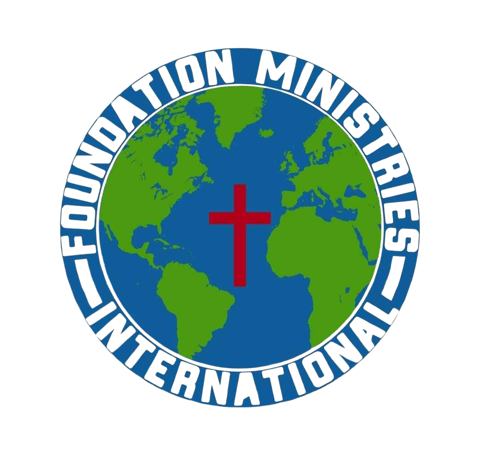
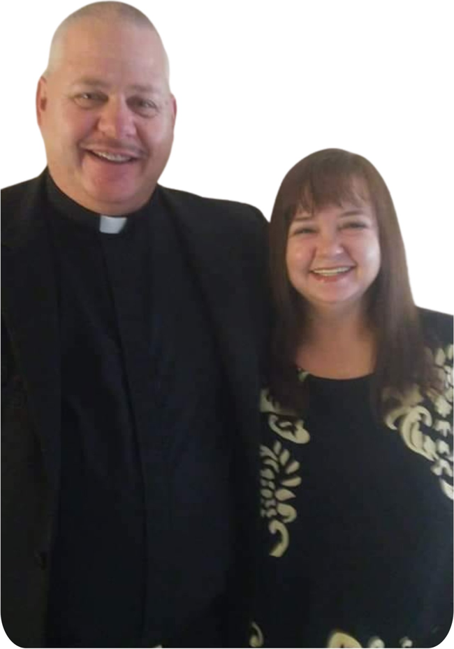
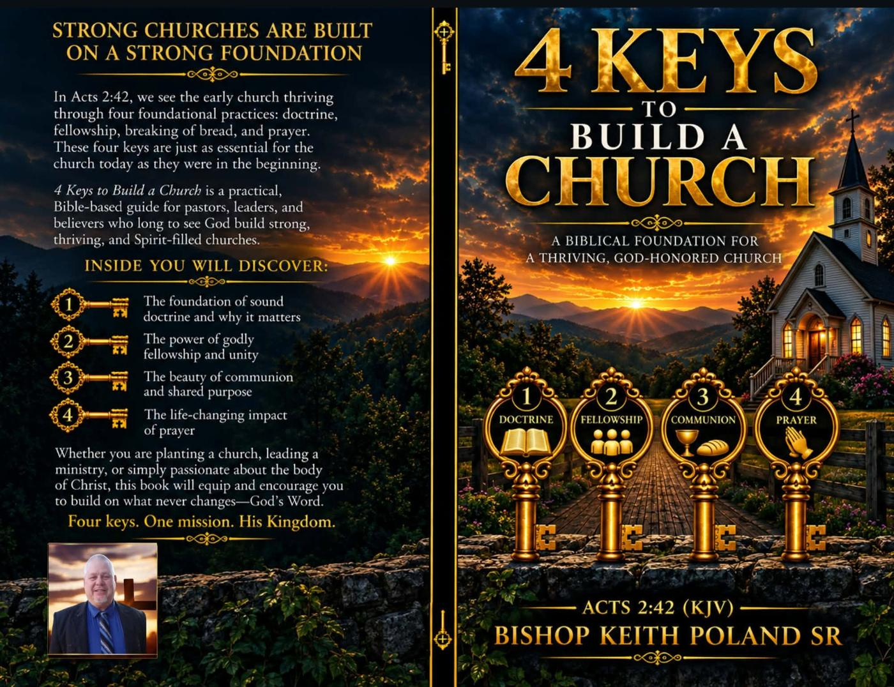
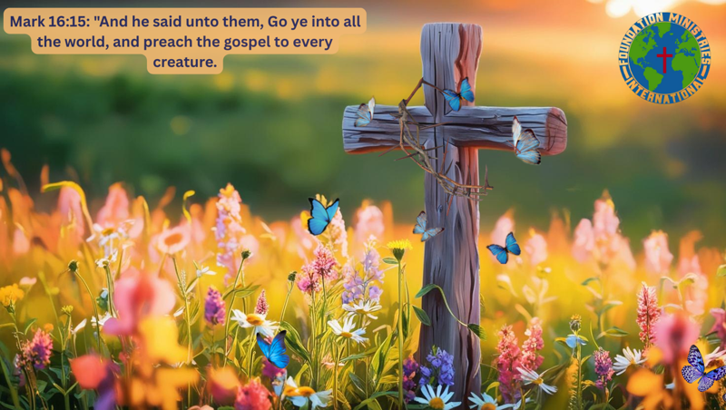
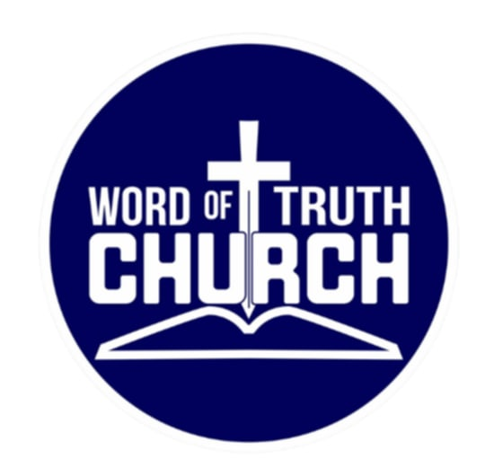
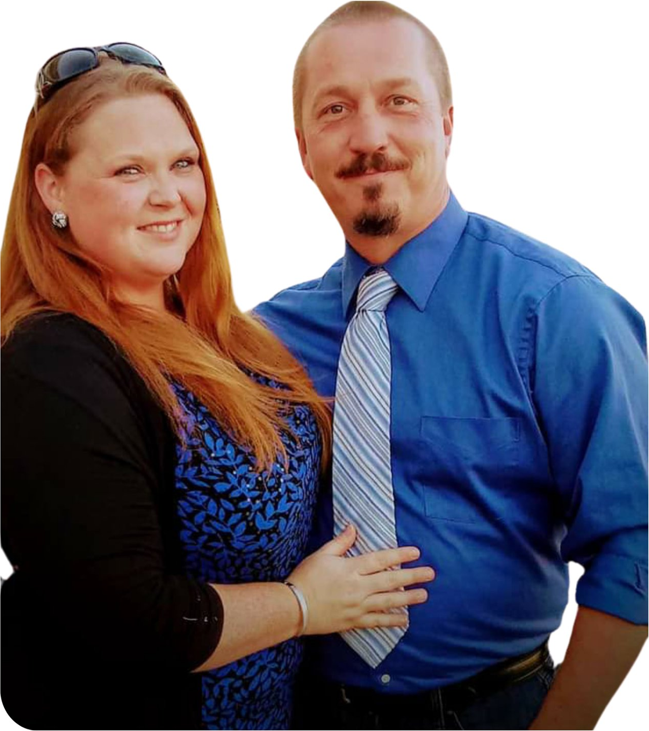
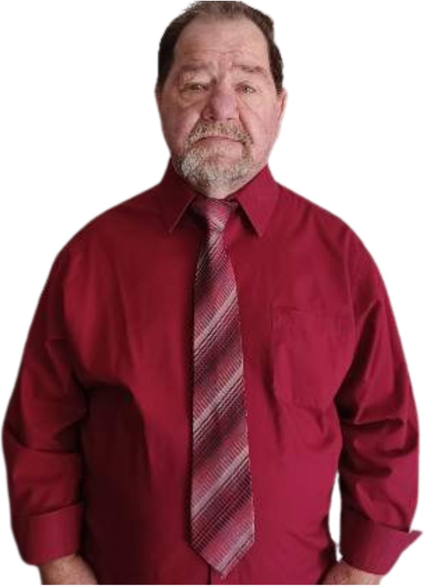
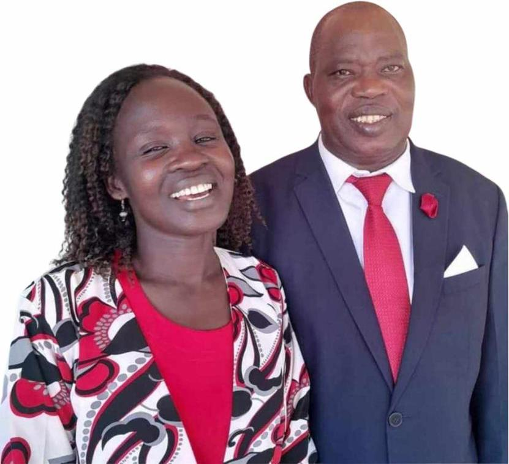

Foundation Ministries Int'lHere at Foundation Ministries International, we want to say Thank You for stopping by.
Plan Your VisitRequest PrayerService times — to confirm
Foundation Ministries International
2600 W. McClure Ln.
Knoxville, TN 37920

Founder/Senior Pastor - First Lady/Co-Pastor
Bishop Keith Poland Sr. is the Founder of Foundation Ministries International & the overseer. Bishop has been in the ministry for over 40 years and is currently the Senior Pastor at Word of Truth Church.
Lisa is Bishop Keith Poland's lovely and wonderful wife. She is also co-founder of Foundation Ministries International and a Board member. She has been in the ministry for 35+ years now.
Recent sermons by Bishop Keith Poland Sr. include "You Are a Royal Priesthood," "You Are a Holy Nation," "The Day Hell Shouted" and "The Road to Damascus." Tap a video to watch on YouTube.
"Knoxville's Own - 24/7 Christian Internet Radio"
The Foundation is a blend of Southern, Urban Gospel and Contemporary Christian that is available 24/7.
Date & time to confirm
Date & time to confirm
Date & time to confirm

"This is my first book that I wrote that the Lord Jesus Christ put in my spirit to write. I have ministered on this subject many times and the Lord said 'Put it in a Book'. I believe that you will be truly blessed as you read these inspired words throughout this book." — Bishop Keith Poland Sr.
Find it on AmazonKindle Edition
We are an umbrella ministry headquartered in the United States in Knoxville, Tennessee and we have ministries under our umbrella located across the world. Foundation Ministries International was founded by Senior Pastor/Bishop Keith Poland Sr. in 1993.

Word of Truth Church was founded by Bishop Keith Poland Sr. in 2016 — the home church in Knoxville, Tennessee.



Stills from the ministry's videos; higher-resolution photos would come from the church.
Help Support Our Vision... By Giving Today. Give in person, online, or by mail.
Give OnlineVenmo @AklineFMI · Cash App $WordoftruthFMI